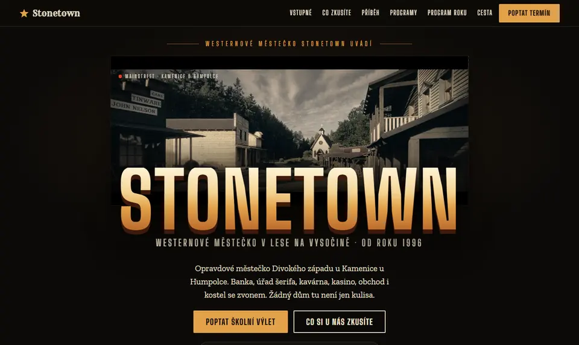
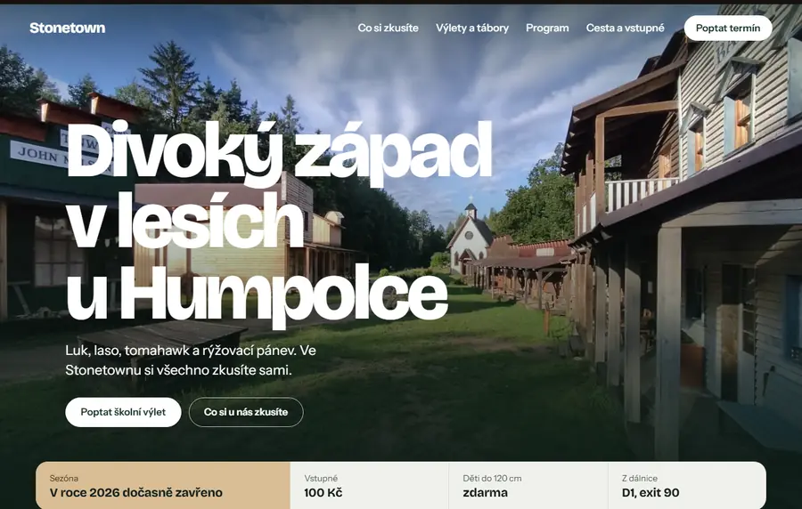
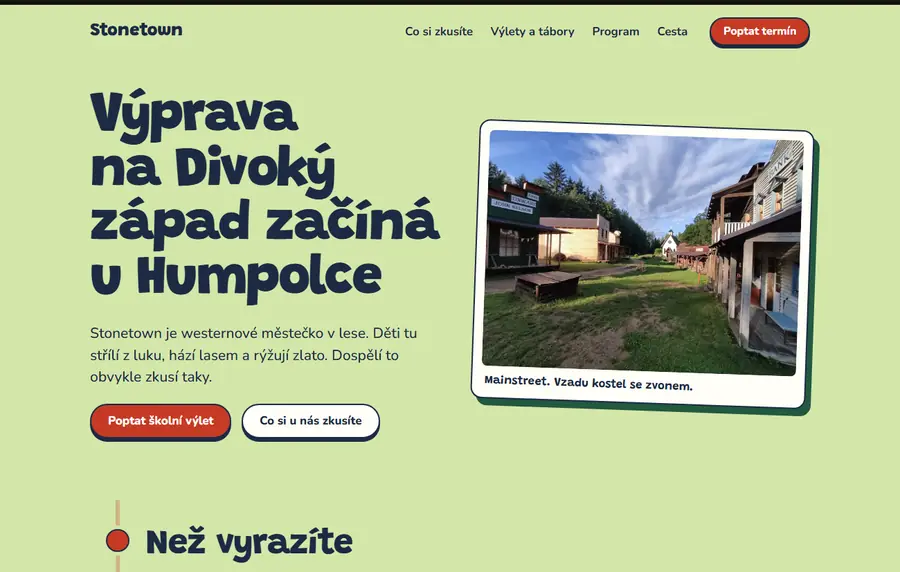

A. Hlavní ulice
Každá část stránky je jeden dům z Mainstreet s malovaným štítem. Barvy jsou vzaté ze skutečných fasád.
- Působí
- Řemeslně a svérázně. Nejvíc „Stonetown“.
- Sedne
- Fanouškům westernu, klubům, rodinám.
Každý návrh je celá úvodní stránka se stejným obsahem a stejnou poptávkou termínu. Liší se tím, jak působí a komu se chce zalíbit. Proklikejte si všechny tři, ideálně i na mobilu, a řekněte, který je vám nejbližší.

Každá část stránky je jeden dům z Mainstreet s malovaným štítem. Barvy jsou vzaté ze skutečných fasád.

Hlavní slovo mají fotky a hodně místa kolem. Nahoře hned to nejdůležitější: sezóna, vstupné, cesta.

Stránka je stezka přes louku, která se při čtení vybarvuje. Disciplíny jsou razítka do deníku.